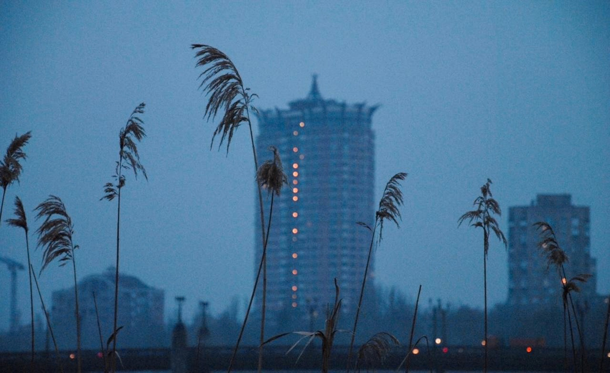
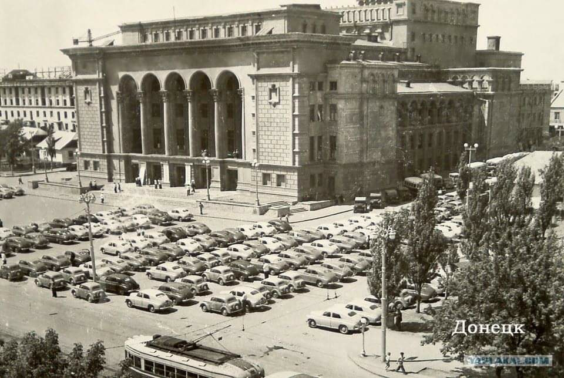

Донецк
Доне́цк (до 1924 — Юзовка, до 1929 — Сталин, до 1961 — Сталино) — город республиканского значения на юго-востоке Донецкой Народной Республики,
административный центр одноимённого городского округа на реке Кальмиус, столица Донецкой Народной Республики.
Договор между Донецкой Народной Республикой и Российской Федерацией от 30.09.2022 года определяет территорию Донецкой Народной Республики,
включая город республиканского значения Донецк, как новый субъект в составе Российской Федерации.


В 1869 году валлийцем Джоном Хьюзом (англ. John Hughes) начинается строительство металлургического завода с рабочим посёлком Юзовка (Юзово)
Бахмутского уезда Екатеринославской губернии[24]. Дату постройки посёлка принято считать временем основания города Донецка. Юзовка делилась
на две части — заводская и «Новый свет». Центральная часть города развивалась вдоль направления на север от металлургического завода к
железнодорожной станции.
В 1889 году к югу от Юзовки был сооружён машиностроительный и чугунолитейный завод Э. Т. Боссе и Р. Г. Геннефельда,
мастерская по ремонту горно-шахтного оборудования — ныне Рутченковский машиностроительный завод. В 1916 году построены два коксохимических завода,
а в 1917 — первый в Российской империи азотный завод — ныне Донецкий завод химреактивов.
С быстрым развитием производственных сил, образованием крупных промышленных предприятий
стремительно росло население Юзовки. В 1917 году посёлок Юзовка получил статус города.
Областной центр
В составе Украинской Советской Социалистической Республики (с 30 декабря 1922 года Союза Советских Социалистических Республик)
Сталино — административный центр с апреля 1923 года по 1924 год Юзовского округа, с 1924 года по июнь 1925 года Сталинского округа Донецкой губернии,
с июня 1925 года по июль 1930 года административный центр Сталинского округа, непосредственно подчинённого правительству Украинской ССР.
В 1932 году город стал центром Донецкой области. В 1938 году Донецкая область была разделена на две области: Сталинскую и Ворошиловградскую.
Оккупация немецко-фашистскими захватчиками
19 октября 1941 года немецкая 1-я танковая армия прорвалась в Сталино.
20 октября 1941 года немецкая 1-я танковая армия заняла город. С 21 октября 1941 года по 8 сентября 1
943 года город был оккупирован нацистской Германией. В середине 1942 года шла работа по созданию Генерального комиссариата Сталино,
и передаче его из-под командования военной администрации гражданским властям. Генеральный комиссариат Сталино включал в себя четыре окружных комиссариата:
Мариупольский, Сталинский, Горловский, Ворошиловоградский. Однако, из-за наступления Красной армии от этих планов отказались.
В результате Донбасской наступательной операции Красной Армии в августе — сентябре 1943 года город Сталино был освобождён.
